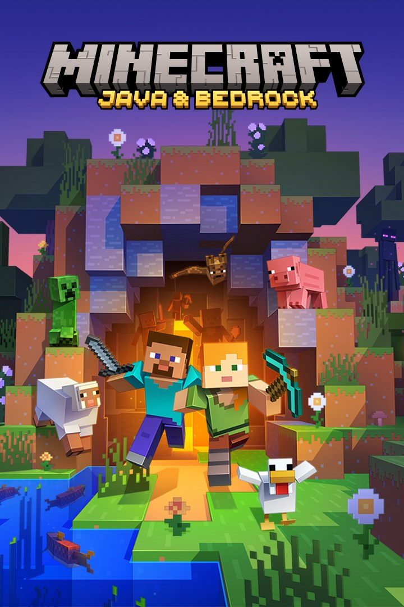

Outside the Classroom
Hobbies
Mathematics
I've been very interested with maths for years, and I decided in the summer of 2021 to begin studying calculus. Most people would tell you that calculus is insanely difficult, but in truth, it isn't all that complicated once you take the leap of faith. One of the first actually difficult problems was the integral below, which I ended up consulting the Math StackExchange community about. The solution is not terribly impressive, but it's my favorite integral so far because of the great memories I gained from solving it.
Start with a simple u-substitution... $$u:=\sqrt{x}$$ $$x=u^2\implies dx=2udu$$ $$x=0\implies u=0^2=0$$ $$x=1\implies u=1^2=1$$
$$4\int_0^1{u\sqrt{u-u^2}du}$$ To deal with the radical, we will complete the square... $$4\int_0^1{u\sqrt{\frac{1}{4}-\left(u^2-u+\frac{1}{4}\right)}du}$$ $$4\int_0^1{u\sqrt{\frac{1}{4}-\left(u-\frac{1}{2}\right)^2}du}$$ $$2\int_0^1{u\sqrt{1-4\left(u-\frac{1}{2}\right)^2}du}$$ $$2\int_0^1{u\sqrt{1-(2u-1)^2}du}$$
Unfortunately, we will need to perform a trig substitution... $$\sin{\theta}:=2u-1\implies \cos{\theta}d\theta=2du\implies du=\frac{\cos{\theta}d\theta}{2}$$ $$u=0\implies \sin{\theta}=-1\implies \theta=-\frac{\pi}{2}$$ $$u=1\implies \sin{\theta}=1\implies \theta=\frac{\pi}{2}$$
$$\int_{-\frac{\pi}{2}}^{\frac{\pi}{2}}{\left(\frac{1+\sin{\theta}}{2}\right)(\cos{\theta})\sqrt{1-\sin^2{\theta}}d\theta}$$ With trig functions, we can play around with some identities and split up the integral into two easier ones... $$\frac{1}{2}\int_{-\frac{\pi}{2}}^{\frac{\pi}{2}}{(1+\sin{\theta})(\cos^2{\theta})d\theta}$$ $$\frac{1}{2}\left[\int_{-\frac{\pi}{2}}^{\frac{\pi}{2}}{\cos^2{\theta}d\theta}+\int_{-\frac{\pi}{2}}^{\frac{\pi}{2}}{\sin{\theta}\cos^2{\theta}d\theta}\right]$$ Notice that \(\cos^2{\theta}\) is an even function and that it is being integrated on a symmetric interval. Because of this, we can cut the interval in half and multiply the whole integral by 2. $$\frac{1}{2}\left[2\int_0^{\frac{\pi}{2}}{\cos^2{\theta}d\theta}+\int_{-\frac{\pi}{2}}^{\frac{\pi}{2}}{\sin{\theta}\cos^2{\theta}d\theta}\right]$$ Also notice that \(\sin{\theta}\cos^2{\theta}\) is an odd function and that it is being integrated on a symmetric interval. These types of integrals evaluate to 0, so we can eliminate this one entirely. $$\int_0^{\frac{\pi}{2}}{\cos^2{\theta}d\theta}$$ $$\frac{1}{2}\int_0^{\frac{\pi}{2}}{(1+\cos{2\theta})d\theta}$$ $$\frac{1}{2}\left[\int_0^{\frac{\pi}{2}}{d\theta}+\int_0^{\frac{\pi}{2}}{\cos{2\theta}d\theta}\right]$$ $$\frac{\pi}{4}+\frac{1}{2}\int_0^{\frac{\pi}{2}}{\cos{2\theta}d\theta}$$
This last integral needs one more substitution to finish up... $$\alpha:=2\theta$$ $$\theta=\frac{\alpha}{2}\implies d\theta=\frac{d\alpha}{2}$$ $$\theta=0\implies \alpha=0$$ $$\theta=\frac{\pi}{2}\implies \alpha=\pi$$
$$\frac{\pi}{4}+\frac{1}{4}\int_0^{\pi}{\cos{\alpha}d\alpha}$$ $$\frac{\pi}{4}+\frac{1}{4}[\sin{\pi}-\sin{0}]=\frac{\pi}{4}$$
$$2\int_0^1{\sqrt{\sqrt{x}-x}dx}=\frac{\pi}{4}$$
Programming
Writing code has always been rather interesting for me, particularly when mixed with difficult math problems. I have yet to completely learn any particular language, but I know a decent amount of C, C++, Javascript, Python, HTML, CSS, and JSON. While building my Capstone Project, I hope to become skilled in writing clean and efficient C# code for the Unity game engine.

Gaming
On the off chance I have a minute to relax, playing some casual video games is a great way to unwind. I would never consider myself to be skilled in any of the games I play, but I enjoy them nevertheless. One of my personal favorites at the moment is Minecraft, which you have almost certainly heard of. I've been playing since late 2020, and in that time, I have managed to build a handful of interesting redstone contraptions and pleasant aesthetic builds. Last summer, I hosted a small server with two of my friends that was focused on the three dimensions the game has to offer. This gave me an opportunity to program an add-on to enhance the experience, and it ended up going pretty well. The pack was oriented around changes that felt like they could be official features that fit in with the original style of the game. One of my personal favorites was an item called the Sagacious Staff, which served a few purposes. First, it could instantly mine glass, which isn't currently possible in the base game. Second, it shoots Ender Pearls at a higher velocity than normal at the cost of durability. Third and most importantly, it allowed the player to extract experience from the XP Transfer Table. When I get a moment to finish the add-on, I hope to release it to the public as a stand-alone data pack.
Robotics
In the 7th & 8th grades, I participated in the VEX Robotics Club at Sunset Jr. High. Like most things I've tried, I was never really any good at it; however, I did have a great time making little robots with my friends. The first tournament we went to was in early 2020, a few weeks before COVID-19 shut everything down. I didn't actually compete in this tournament because my team hated me, but I was there for it. The second one was in our engineering teacher's classroom with a handful of other surrounding schools because an actual competition was too expensive. While I don't remember how we placed, I know I did compete in this competition and we didn't get close to 1st place.
Travel
My family and I have never been particularly big on travelling long distances. We had a few years where we would go camping many times per summer, but that hasn't been the case recently. Most of our travels have been within Utah, although past experiences have spread my footprint to some surrounding states. The only time I've ever been on a plane was when I was two years old heading to Texas, which is why there's a seemingly inexplicable gap between the main chunk and Texas. Technically speaking, I've been to at least one more state because of the plane's flight path; however, I don't count that. I've never left the United States, but I am content with that for now.
Creative Work
Youtube
On February 26, 2016, I created a YouTube channel named "Petsaresweet" as a reference to my Animal Jam account that went by the same name. The channel has never had a clear focus on a genre of content, but it is most prominently a gaming channel. It began with more challenge-oriented videos that had nothing to do with video games; however, as time went on, I decided to make content for Animal Jam, various Wii games, and even some 3DS titles. Along the way, there were a few videos dedicated to art, but they were always the minority. At some point along the way, I finally decided I didn't like the name "Petsaresweet" and changed it to "Digital Breeze." This was also around the time I began streaming Super Mario Maker 2 on my channel, which is where my content began to gain some traction. Streaming did have to end once the school year begun, but I continued to make videos on occasion. At the beginning of March of 2022, I decided to rebrand one last time, taking on the name "AnAaronNight". The channel has not recieved any new content for a long time, but I do hope to release more content for it in the future.
Scratch Projects

Scratch is a programming website developed by MIT for young children learning to write code. This is where I got my start in computer logic and code, and it was a great time while I was active on the platform. None of the projects are by any means impressive, but they taught me valuable skills for when I took the leap to more rigorous languages. In fact, most projects were never published because they were designed with the intent of testing an idea I had with little polish. My most recent legitimate project I published was called Simple Complexity: a small 2D platformer where you can only move by entering math expressions. The larger the value produced by the expression, the more it would fill up your battery and the faster you would go. The base game was completed over the span of four days, but it continued to receive updates for a little while after. It's far from a good game, but that experience taught me a lot about game development and programming in general.